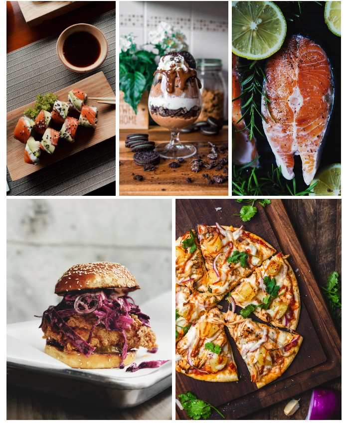
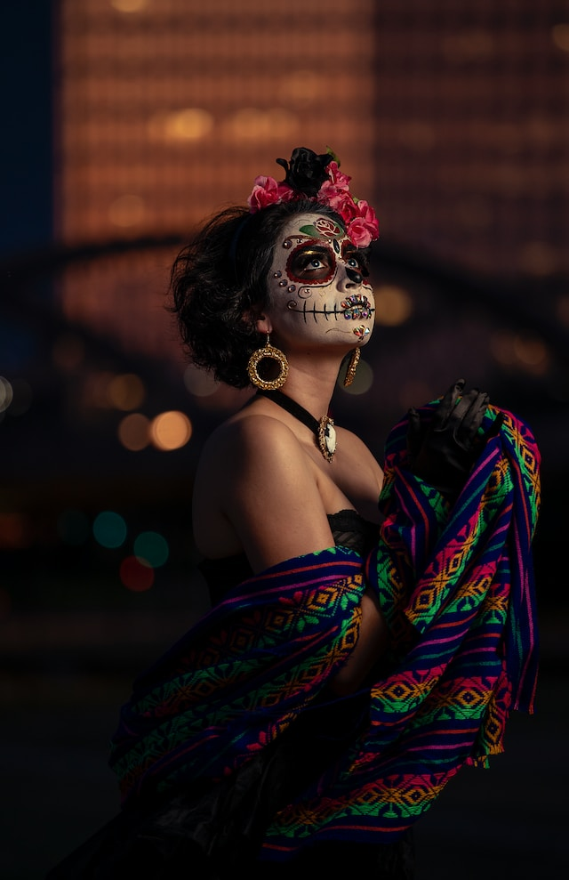

We believe that travel is not merely a physical journey but also a transformative experience. As such, our blog delves into the transformative power of travel, exploring the ways it expands horizons, nurtures personal growth, and fosters a deeper understanding of the world around us. Our articles touch on topics such as self-discovery, mindfulness, and the profound connections forged through travel. Join our vibrant community of explorers, artists, and dreamers who seek to embrace the beauty and diversity of our planet. Together, we embark on a journey of discovery, where every post is an invitation to dive into the wonders of our world and uncover the transformative power of travel.

Culinary experiences are a delightful gateway to culture, traditions, and the art of flavors. From savoring local street food to indulging in fine dining, the world offers a tantalizing array of culinary delights. Immerse yourself in the vibrant markets of Marrakech, tasting Moroccan spices and tagines, or embark on a culinary tour through the bustling alleys of Tokyo, discovering the intricacies of sushi and ramen. Indulge in wine tastings in the vineyards of Tuscany, savoring the rich flavors of Italian cuisine. Whether it's mastering the art of French pastry in a Parisian patisserie or exploring the vibrant food scenes of Bangkok, culinary experiences awaken the senses and create lifelong memories. From farm-to-table experiences to immersive cooking classes, culinary travel allows you to engage with local ingredients, techniques, and traditions. It offers a deeper understanding of a destination's cultural heritage and fosters connections with local communities. Whether you're a food enthusiast, a curious traveler, or simply someone who appreciates the joys of gastronomy, culinary experiences are a delectable way to explore the world, one bite at a
Cultural experiences offer a captivating journey into the heart and soul of a destination. From exploring ancient temples and historical landmarks to immersing yourself in local customs and traditions, cultural experiences provide a deeper understanding of a place and its people. Wander through the vibrant streets of Marrakech, getting lost in the medina's labyrinthine alleys, or witness the grandeur of the Taj Mahal in India, a testament to love and architectural brilliance. Engage with indigenous communities in the Amazon rainforest, learning about their way of life and ancient practices. Celebrate cultural festivals, such as the colorful Holi festival in India or the mesmerizing Carnival in Rio de Janeiro, where music, dance, and tradition come alive. By participating in local rituals, tasting authentic cuisine, and interacting with locals, cultural experiences create lasting connections and broaden perspectives. Whether it's learning traditional crafts in a rural village or attending a traditional tea ceremony in Japan, these experiences inspire a sense of wonder and appreciation for the diverse tapestry of humanity.
Romantic getaways are the perfect escape for couples seeking to ignite or rekindle their love. Whether it's a secluded beach resort, a charming European city, or a cozy cabin in the mountains, these destinations set the stage for romance and intimate connection. Walk hand in hand along pristine shorelines at sunset, share candlelit dinners at exquisite restaurants, and indulge in couples' spa treatments. Explore cobblestone streets, discovering hidden cafes and picturesque landmarks, or embark on adventurous activities like hot air balloon rides or scenic hikes. The ambiance of a romantic getaway creates an atmosphere where cherished memories are made, where love is nurtured and celebrated. Unwind in luxurious accommodations, adorned with rose petals and breathtaking views, or cozy up by the fireplace, enveloped in each other's warmth. Disconnect from the outside world and focus on deepening your bond, engaging in heartfelt conversations and creating shared experiences. From romantic sunsets over Santorini to gondola rides through the canals of Venice, these destinations provide an enchanting backdrop for love to flourish. Whether you're celebrating an anniversary, planning a honeymoon, or simply desiring a romantic escape, these gateways are an invitation to immerse yourselves in passion, connection, and the sheer joy of being together.
Travel packing lists are essential tools for ensuring a smooth and organized trip. They help you pack efficiently and avoid the stress of forgetting important items. Whether you're heading on a weekend getaway or a long-term adventure, a well-curated packing list is your best companion. Start with the basics: clothing appropriate for the destination and weather, toiletries, and essential documents like passports and visas. Don't forget adapters, chargers, and electronic devices. Consider the activities you have planned, such as hiking gear, swimwear, or formal attire for special occasions. It's also wise to include a first-aid kit with necessary medications. Consider the duration of your trip and the availability of laundry facilities to gauge the amount of clothing you need. Opt for versatile pieces that can be mixed and matched. Rolling clothes or using packing cubes can maximize space and keep things organized. Remember to pack travel-size toiletries to comply with airport regulations. It's also helpful to include a small bag for day trips or excursions. When it comes to packing, less is often more. Leave room for souvenirs and remember that you can purchase items during your trip if needed. Check your packing list multiple times to ensure you haven't overlooked anything. By creating a comprehensive packing list tailored to your specific needs, you'll have peace of mind and be well-prepared for your travel adventures.